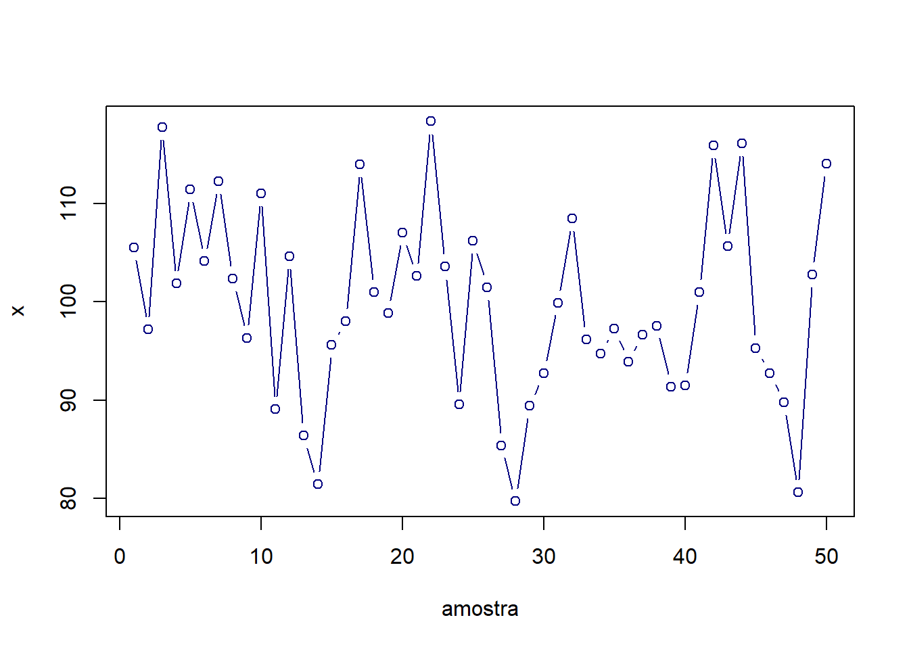
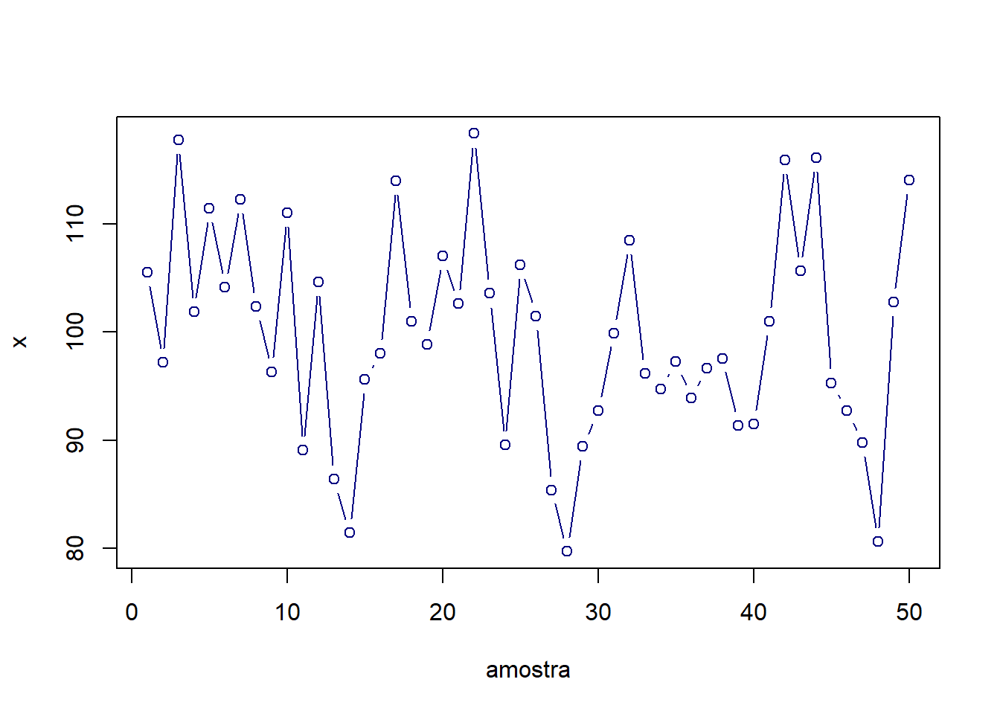
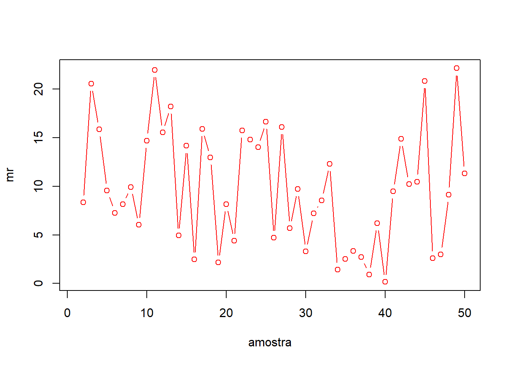
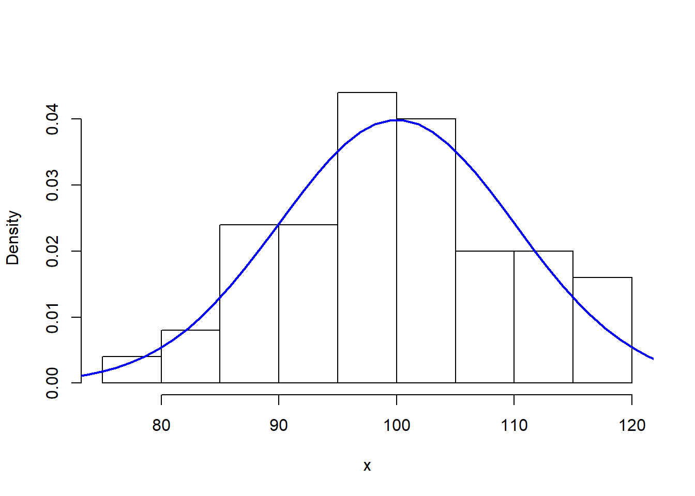
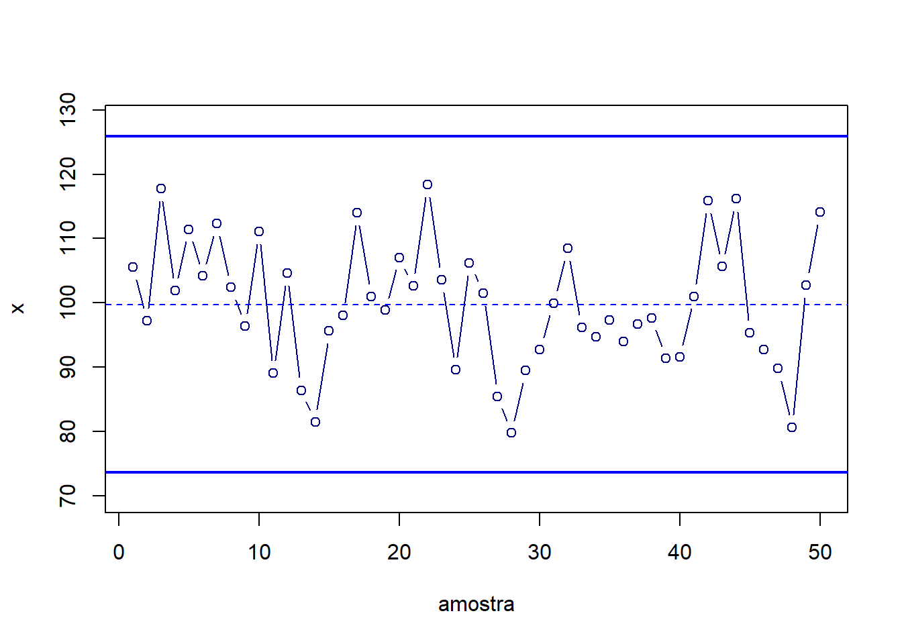
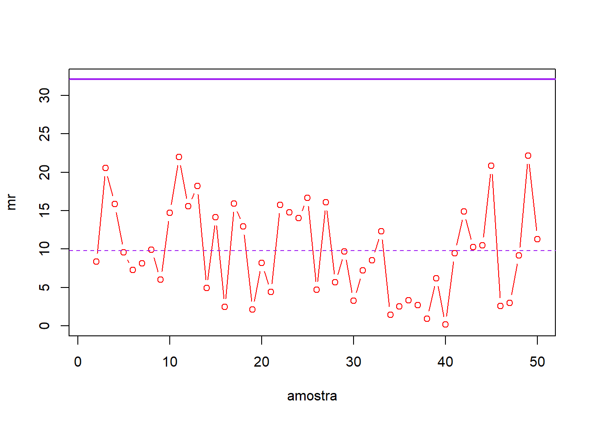
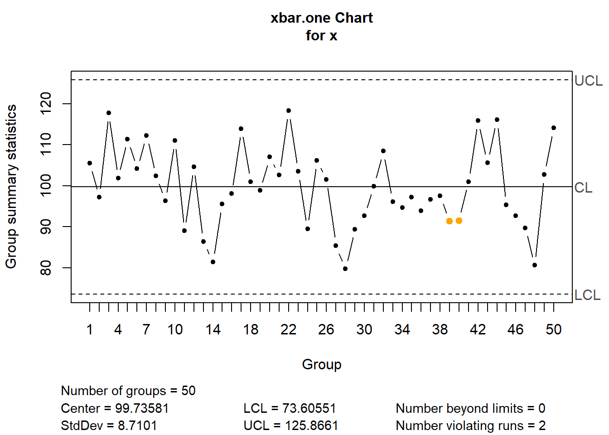
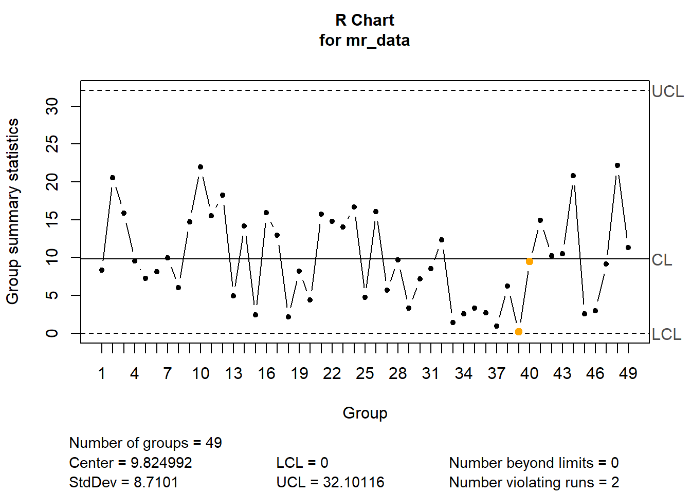

set.seed(13)
x <- rnorm(50, 100, 10)
m <- length(x)
plot(x, type = "b", col = "navy", xlab="amostra")
Uma das ferramentas mais populares para programação em R é o RStudio, desenvolvido pela empresa posit. Este requer uma versão R 3.6.0+ ou mais, que pode ser obtida em R CRAN. Posteriormente à instalação do R, o Rstudio pode ser instalado. A versão desktop gratuíta está disponível em R Studio.
R é uma linguagem e ambiente de livre acesso para computação estatística e gráficos. No contexto da Engenharia de Qualidade, existem diversas funções já implementadas e pacotes (bibliotecas) desenvolvidas para manipular dados, aplicar diversos métodos e realizar visualização gráfica. Neste contexto, incluiem-se as cartas de controle e demais ferramentas do Controle Estatístico de Qualidade.
A seguir expõe-se o código e resultado de um conjunto de 50 amostras de tamanho unitário, \(n=1\), \(m=50\), extraídas aleatoriamente da distribuição normal e plotadas em sequência. Considera-se portanto, \(n\) para definir o tamanho amostral e \(m\) para definir o número de amostras tomadas sequencialmente ao longo do tempo.
set.seed(13)
x <- rnorm(50, 100, 10)
m <- length(x)
plot(x, type = "b", col = "navy", xlab="amostra")
Ao se observar uma carta como a plotada anteriormente, deseja-se avaliar se a característica de qualidade de interesse apresenta estabilidade. Para monitorar a estabilidade de processos, medidas de tendência central como a média são comumente usadas. Quando alguma amostra apresenta um deslocamento considerável em relação às demais, tal variação, pode ser explicada por alguma mudança no processo, dita causa especial de variação. Esta deve ser investigada caso não seja conhecida.
Uma medida usada para avaliar a variabilidade dita de causa comum em procedimentos de controle com amostras unitárias é a amplitude móvel (moving range). A amplitude móvel, MR, é calculada como o valor absoluto de duas observações consecutivas, isto é, \(MR = |x_i-x_{i-1}|\). Para calculá-la utilizaremos a sintaxe do pacote dplyr.
library(dplyr)mr <- x %>%
diff() %>% # diferenca entre observações
abs() # valor absoluto
mr <- c(NA,mr)
plot(mr, type = "b", col = "red", xlab = "amostra")
O controle estatístico de qualidade tem fundamentação na inferência estatística, uma vez que as cartas de controle têm o objetivo de extrair informações da população a partir de dados amostrais de características de qualidade de processos, produtos e/ou serviços de interesse.
No caso do controle de variáveis, a distribuição normal é considerada em muitas cartas. A seguir é plotado um histograma das observações consideradas anteriormente, juntamente com a curva da função densidade de probabilidade da distribuição normal.
x_seq <- seq(70,130,length = 50)
hist(x, main ="", probability = TRUE, col = "white")
lines(x_seq, dnorm(x_seq, mean = 100, sd = 10),
col = "blue", lwd = 2)
Geralmente quando se deseja controlar variação de causa comum e de causa especial, são usadas duas cartas de controle.
Para calcular os limites de controle da carta de valores individuais consideram-se as seguintes equações a seguir, onde \(\overline{MR}\) consiste na média das amplitudes móveis e \(d_2\) é uma constante relacionada ao tamanho amostral. Na maioria dos casos são usados um limite superior (LSC) e um inferior (LIC) de controle. Estas fórmulas serão melhor explicadas no momento certo. Pode-se observar que os limites são calculados em relação à média das amostras, \(\bar x\), considerando 3 desvios-padrões. Logo o desvio-padrão para as amostrais unitárias é estimado considerando a amplitude móvel, \(\hat \sigma = \overline{MR}/d_2\). Neste caso, como MR foi calculada considerando duas observações, \(d_2 = 1,128\).
\[ \begin{align} LIC =& \overline x - 3 \frac{\overline{MR}}{d_2} \\ LSC =& \overline x + 3 \frac{\overline{MR}}{d_2} \end{align} \]
Para calcular tais limites no R, procede-se conforme segue:
LIC <- mean(x) - 3*mean(mr, na.rm = T)/1.128
LSC <- mean(x) + 3*mean(mr, na.rm = T)/1.128Além dos limites é comum plotar a estatística relacionada à carta, neste caso a própria média das observações a partir da qual definiu-se os limites. A seguir o código para a carta obtido no R.
plot(x, type = "b", col = "navy", xlab="amostra",
ylim = c(min(x)-10, max(x)+10))
abline(h=(c(LIC,LSC)), col = "blue", lwd = 2)
abline(h=mean(x), col = "blue", lty=2)
Pode-se observar que a carta obtida apresenta todas as observações entre os limites de controle, de forma que não há indícios de presença de uma causa especial de variação para a característica de qualidade monitorada.
Já em relação ao monitoramento da causa comum com a amplitude móvel, não se considera um limite inferior de controle, apenas o superior, calculado conforme segue, onde \(D_4\) é uma constante que, no caso da carta de amplitude móvel, sempre será \(D_4=3,267\), visto que a amplitude móvel considera duas observações. Conforme já dito o desenvolvimento das constantes usadas nas cartas será aprofundado durante o curso.
\[ LSC = D_4 \overline{MR} \]
Para calcular tal limite no R, procede-se conforme segue:
LSC_mr <- 3.267*mean(mr, na.rm = T)A seguir exibe-se o código para plotar a carta com o limite.
plot(mr, type = "b", col = "red", xlab = "amostra",
ylim = c(0,
max(mr,na.rm = T)+10))
abline(h=(LSC_mr), col = "purple", lwd = 2)
abline(h=mean(mr,na.rm=T), col = "purple", lty=2)
Pode-se observar que não todas as amplitudes móveis plotadas estão abaixo do limite de controle, de forma que não há indícios para dizer que há alguma variação de causa comum importante na característica de qualidade controlada.
Na prática usaremos o pacote qcc, o mais popular para controle estatístico de qualidade em R. Um guia para uso das principais ferramentas do pacote é encontrado a seguir qcc vignette.
A seguir expõe-se o código para obter as mesmas cartas com o pacote qcc. Pode-se observar que o pacote foi implementado visando dar ao usuário um resultado de fácil interpretação, identificando os limites na carta, expondo as estatísticas e os valores calculados dos limites. Há um detalhe que o código simples exposto anteriormente não exibe. Dois pontos em amarelo. Apesar de não estarem fora de controle, eles violaram uma das regras sensibilizantes comumente usadas para avaliar cartas. Tais regras serão explicitadas Quando as cartas para variáveis forem aprofundadas.
library(qcc)
qcc.options(bg.margin = "white")xind <- qcc(x, type = "xbar.one", plot=F)
plot(xind)
mr_data <- matrix(c(x[1:m-1],x[2:m]), ncol = 2, byrow = F)
mr_x <- qcc(mr_data, type = "R")